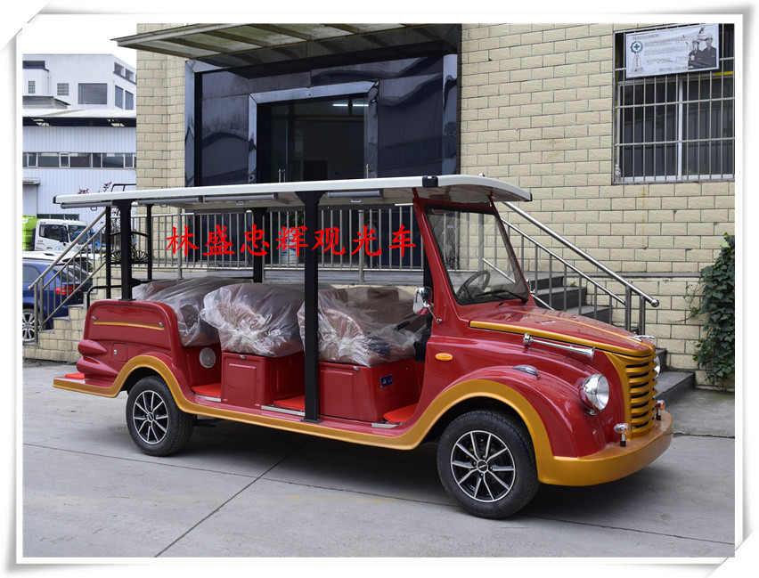
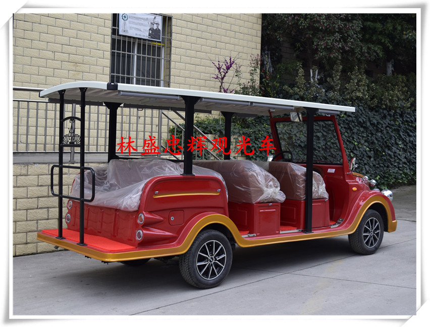
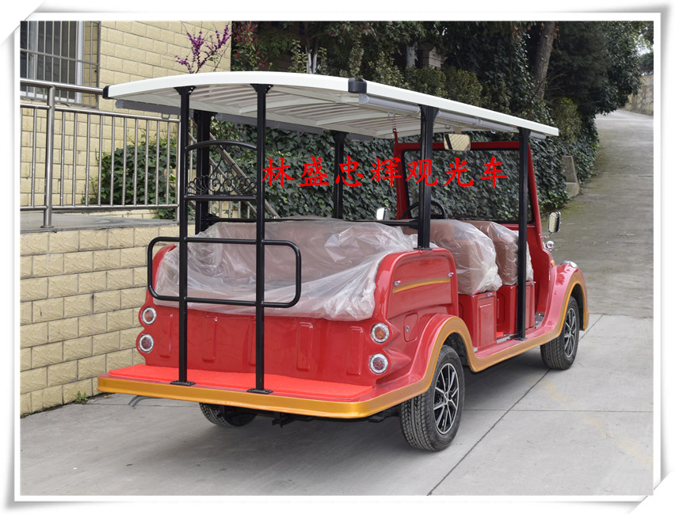

电动观光车铅酸蓄电池的正确使用和维护保养
蓄电池/电瓶是电动自行车的动力源，又是一种易耗品，并且价格较高，因此使蓄电池保持良好的工作状态，延长其使用寿命，无论从环保或经济角度讲，都有很大的实用价值。 以下是林盛忠辉观光车蓄电池的一些保养方法：
1、新购回来的电动车应先充足电再使用。因为许多电动车在商店已搁置了几个月，甚至半年以上，所以必须先充足电后再使用，充足电后最好不要立即使用，需静置十分钟左右。
2、电瓶拿下来充电，安装的时候，电瓶在电动自行车上安装要牢固，以防骑行时电瓶受振动损害。 电池在搬运中，禁止摔掷、滚翻、重压。
3、经常清除电瓶盖上的灰尘、污物，注意保持电瓶干燥、清洁，以防电瓶自行放电。
4、绝对不能让电瓶长期处于电量不足的状态，并且要养成每天晚上为电瓶充电的良好习惯。长期不用，应该充满电，放置阴凉干燥处，并定期充电（一般10天）。
5、电动自行车刚起动时，要用脚踏（无脚踏的可以用脚推地面的方式）帮助起动，上坡时候，用脚踏帮助电动车上坡，以免放电电流过大而损坏电瓶。
6、骑行时，要注意不能让电瓶过放电，蓄电池放电到终止电压后，继续放电称为过放电。过放电容易引起电瓶严重亏电，从而大大地缩短其使用寿命。所以蓄电池使用时应尽量避免深度放电，做到浅放勤充，一般情况应做到：蓄电池以放电深度为50%时充一次电最佳。
电动自行车上一般都设有欠压保护功能，当电瓶电量显示器只有一只显示灯亮时，应该关闭电源，使用脚踏，并尽量尽可能快对电瓶进行充电，以免电瓶过放电。
林盛忠辉观光车蓄电池放电到终止电压时内阻较大，电解液浓度非常稀薄，特别是极板孔内及表面几乎处于中性，过放电时内阻有发热倾向，体积膨胀，放电电流较大时，明显发热甚至出现发热变形，这时硫酸铅浓度特别大，生存晶枝短路的可能性增大，况且此时硫酸铅会结晶成较大颗粒，即形成不可逆硫酸盐化，将进一步增大内阻，充电恢复能力很差，甚至无法修复。
林盛忠辉观光车蓄电池使用时应防止过放电，采取“欠压保护”是很有效的措施。另外，由于电动车“欠压保护”是由控制器控制的，但控制器以外的其他一些设备如电压表、指示灯等耗电电器是由蓄电池直接供电的，其电源的供给一般不受控制器控制，电动车锁开关一旦合上就开始用电。虽然电流小，但若长时间放电1-2周就会出现过放电。因此，不得长时间开锁，不用时应立即关掉。
7、避免过充电，当充电器显示充满就停止充电，不能一充电就一夜甚至几天。过充电会促使极板活性物质硬化脱落，并产生失水和蓄电池变形。蓄电池在高温季节运行，主要存在过充电的问题。因此，夏天应尽量降低蓄电池温度，保证良好的散热，防止在烈日暴晒后即充电，并应远离热源。
林盛忠辉观光车避免过充电，另外要选择充电器参数要与蓄电池良好匹配，要充分了解蓄电池在高温季节的运行状况，以及整个使用寿命期间的变化情况。使用时不要将蓄电池置于过热环境中，特别是充电时应远离热源。蓄电池受热后要采取降温措施，待蓄电池温度恢复正常时方可进行充电。蓄电池的安装位置应尽可能保证良好散热，发现过热时应停止充电，应对充电器和蓄电池进行检查。蓄电池放电深度较浅时或环境温度偏高时应缩短充电时间。
8、避免长期亏电，长期亏电会使极板硫化。在低温情况下，充电主要存在充电接受能力差、充电不足造成电池亏电的问题。低温时应采取保温防冻措施，特别是充电时应放在温暖的环境中，有利于保证充足电，防止不可逆硫酸盐化的产生，延长蓄电池的使用寿命。
9、防止短路，在安装或使用时应特别小心，所用工具应采取绝缘措施，连线时应先将电池以外的电器连好，经检查无短路，最后连上蓄电池，布线规范应良好绝缘，防止重叠受压产生破裂。禁止用电池短路的方法来检测蓄电池的带电情况，以防止发生爆炸造成人员伤亡
蓄电池在短路状态时，其短路电流可达数百安培。短路接触越牢，短路电流越大，因此所有连接部分都会产生大量热量，在薄弱环节发热量更大，会将连接处熔断，产生短路现象。蓄电池局部可能产生可爆气体或充电时集存的可爆气体，在连接处熔断时产生火花，会引起蓄电池爆炸；若蓄电池短路时间较短或电流不是特别大时，可能不会引起连接处熔断现象，但短路仍会有过热现象，会损坏连接条周围的粘结剂，使其留下漏液等隐患。因此，蓄电池绝对不能有短路产生，在安装或使用时应特别小心，所用工具应采取绝缘措施，连线时应先将电池以外的电器连好，经检查无短路，最后连上蓄电池，布线规范应良好绝缘，防止重叠受压产生破裂。
10、避免蓄电池长时间大电流放电，将极大地损伤电池内部结构。建议车主每次启动时间不能超过5秒。需要两次连续启动，中间要间隔10－15秒的时间。
11、防止在阳光下暴晒，阳光下暴晒会使蓄电池温度增高，蓄电池各活性物质的活度增加，影响蓄电池使用寿命。
12、放电后的蓄电池应及时补充电，不得搁置12小时以上。
相关标签：电动观光车，
上一条：轮胎对于贵阳旅游观光车的重要性
下一条：如何确定电动观光车需要更换电池